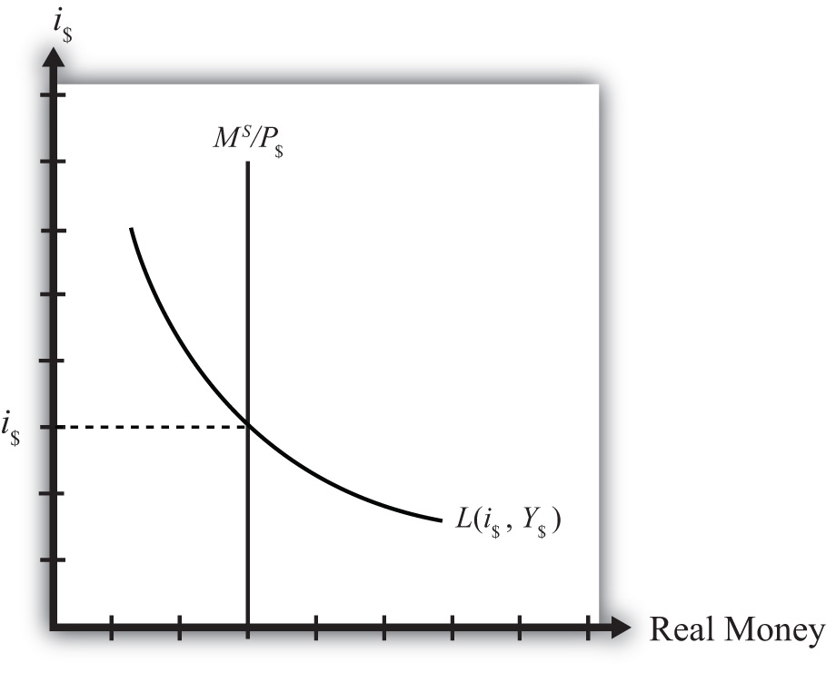

A money demand function displays the influence that some aggregate economic variables will have on the aggregate demand for money. The above discussion indicates that money demand will depend positively on the level of real gross domestic product (GDP) and the price level due to the demand for transactions. Money demand will depend negatively on average interest rates due to speculative concerns. We can depict these relationships by simply using the following functional representation:
Here MD is the aggregate, economy-wide money demand, P$ is the current U.S. price level, Y$ is the United States’ real GDP, and i$ is the average U.S. interest rate. The f stands for “function.” The f is not a variable or parameter value; it simply means that some function exists that would map values for the right-side variables, contained within the brackets, into the left-side variable. The “+” symbol above the price level and GDP levels means that there is a positive relationship between changes in that variable and changes in money demand. For example, an increase (decrease) in P$ would cause an increase (decrease) in MD. A “−” symbol above the interest rate indicates that changes in i$ in one direction will cause money demand to change in the opposite direction.
For historical reasons, the money demand function is often transformed into a real money demand function as follows. First, rewrite the function on the right side to get
In this version, the price level (P$) is brought outside the function f( ) and multiplied to a new function labeled L( ), called the “liquidity function.” Note that L( ) is different from f( ) since it contains only Y$ and i$ as variables. Since P$ is multiplied to L( ) it will maintain the positive relationship to MD and thus is perfectly consistent with the previous specification. Finally, by moving the price level variable to the left side, we can write out the general form of the real money demand function as
This states that real money demand (MD/P$) is positively related to changes in real GDP (Y$) and the average interest rate (i$) according to the liquidity function. We can also say that the liquidity function represents the real demand for money in the economy—that is, the liquidity function is equivalent to real money demand.
Finally, simply for intuition’s sake, any real variable represents the purchasing power of the variable in terms of prices that prevailed in the base year of the price index. Thus real money demand can be thought of as the purchasing power of money demanded in terms of base year prices.
Money supply is much easier to describe because we imagine that the level of money balances available in an economy is simply set by the actions of the central bank. For this reason, it will not depend on other aggregate variables such as the interest rate, and thus we need no function to describe it.
We will use the parameter M$S to represent the nominal U.S. money supply and assume that the Federal Reserve Bank (or simply “the Fed”), using its three levers, can set this variable wherever it chooses. To represent real money supply, however, we will need to convert by dividing by the price level. Hence let represent the real money supply in terms of prices that prevailed in the base year.
The equilibrium interest rate is determined at the level that will equalize real money supply with real money demand. We can depict the equilibrium by graphing the money supply and demand functions on the following diagram.
Figure 18.1 The Money Market
The functions are drawn in Figure 18.1 "The Money Market" with real money, both supply and demand, plotted along the horizontal axis and the interest rate plotted along the vertical axis.
Real money supply, , is drawn as a vertical line at the level of money balances, measured best by M1. It is vertical because changes in the interest rate will not affect the money supply in the economy.
Real money demand—that is, the liquidity function L(i$, Y$)—is a downward sloping line in i$ reflecting the speculative demand for money. In other words, there is a negative relationship presumed to prevail between the interest rate and real money demand.
Where the two lines cross determines the equilibrium interest rate in the economy (i$) since this is the only interest rate that will equalize real money supply with real money demand.
Jeopardy Questions. As in the popular television game show, you are given an answer to a question and you must respond with the question. For example, if the answer is “a tax on imports,” then the correct question is “What is a tariff?”